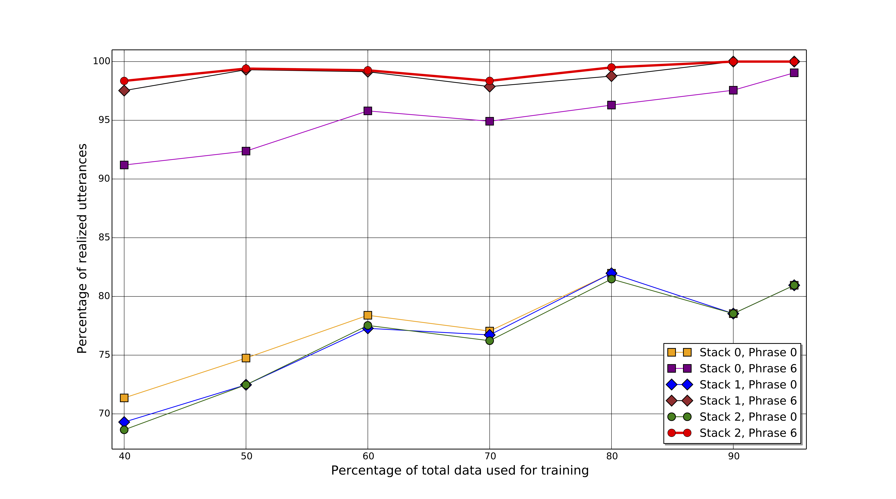

Results
In this paper, we compare two very different models for performing NLG. We first present BAGEL, which is a language generator model that utilizes dynamic Bayesian networks in order to produce natural and informative utterances. This NLG system learns content ordering, lexical selection, aggregation and realization directly from data, and it requires no handcrafting beyond the semantic stack annotation of the training data. The second NLG model that this paper presents is based on semantically conditioned LSTM structures that can learn from unaligned data. After experimentation, we observe that the former model outperforms the latter in terms of BLEU score. We attribute this performance difference to the fact that the neural model, not capable of taking advantage of semantic alignment, requires substantially more data in order to be properly trained. As we see in our experiments, the small size of the dataset does not affect the Bayesian model, which exploits the semantic annotation of the data and, hence, requires fewer data instances to learn the desired probabilities.
Summary
First of all, we performed experiments to demonstrate the impact of the back-off scheme (refer to "Generalizing"). We can observe two essential phenomena in the figure above. With no phrase back-off (i.e. level 0), fewer utterances tend to be produced as we increase the level of stack back-off. On the other hand, when the full phrase back-off (i.e. level 6) is enabled, then we see that the surface realization becomes increasingly successful with the increasing depth of stack back-off.
These may seem contradictory at first glance. However, the former is the result of the fact that the predicted stack sequences using back-off are more likely to have not been present in the training set. This not only is not an issue when using the phrase back-off, but it also gives the phrase inference an opportunity to explore more candidates beyond the training set from which the model learned. Let us also point out that using full back-off for both the stack and the phrase inference enables the model to produce an utterance for every single test MR, if the model is trained on 90% or 95% of the dataset (and tested on the remainder). If the proportion of the training data is lower, the success rate remains above 98% nonetheless, which is rather impressive considering that the lowest proportion, i.e. 40% of the dataset, corresponds to mere 161 samples.